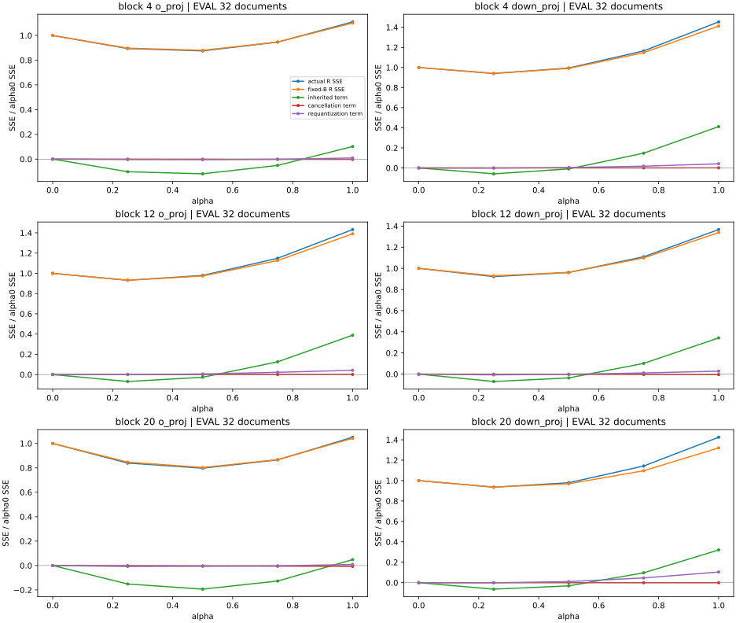
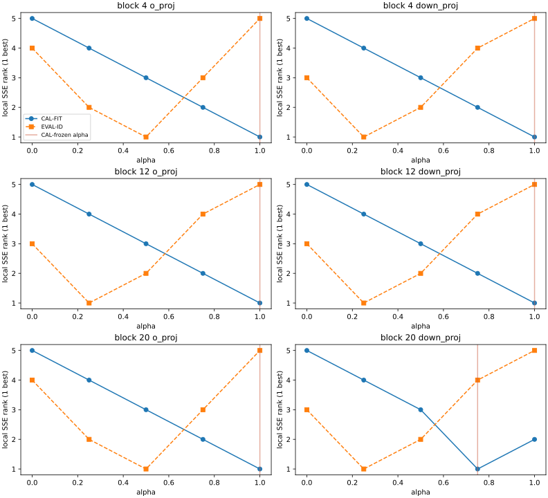
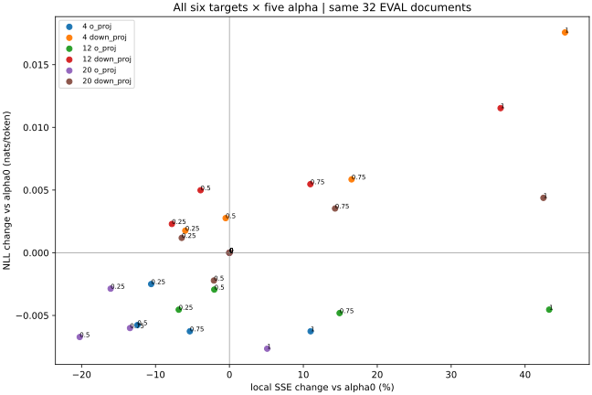

한국어DIOVA · CASE014 · P1 LOCAL REVIEW
What survived compensation?
Quantization stores model numbers using fewer bits. Compensation adjusts later weights to reduce error inherited from earlier layers. This tool checks what survives after those adjusted weights are stored as INT4 again, and whether the benefit transfers to other documents.
Overview
Executed fitting → actual INT4 save → reload → three-term decomposition → full-model comparison.
Executed correction fitting, INT4 save/reload, error decomposition and common-input full-model comparison. CAL-selected strengths reduced local error on CAL, but increased aggregate local error on new EVAL documents at all six targets. Next-token scores moved differently across targets.
30/30 core settings complete ·32 EVAL books ·16 SHIFT content groups · dense BF16 quality execution
Correction and cancellation
Two errors can partially cancel before compensation. We separately measured the correction, changed cancellation and re-quantization. Exact P0 examples and LLM observations have different scopes.
Equations, precision and arithmetic uncertainty
W[out,in], X/Z[in,tokens]. CAL only: G=ZZᵀ, λ=0.001 trace(G)/d; (G+λI)Kᵀ=[W(X−Z)Zᵀ]ᵀ; δW=αK; W*=W+δW.
A=W(X−Z), C=δWZ, B=(What−W*)Z, B₀=(What₀−W)Z, R=A−C−B, R₀=A−B₀.
Δ=||R||²−||R₀||²=T_inherited+T_cancellation+T_requant.
T_inherited=||C||²−2⟨A,C⟩; T_cancellation=2⟨B₀,C⟩; T_cont=||C||²−2⟨R₀,C⟩; T_requant=||B−B₀||²−2⟨R₀−C,B−B₀⟩.
Decomposition uses reloaded FP32 What lifted to FP64. Actual BF16 output residuals are separate; small runtime signs remain unresolved.
Comparison
Captured teacher projection inputs X and hybrid-prefix inputs Z using actual full-model forwards. Targets are o_proj/down_proj in blocks4/12/20; strengths are0/0.25/0.5/0.75/1. Each target is intervened on separately, preserving its other block operations and suffix.
CAL fitting used CPU FP64 full-input Gram, Cholesky, triangular solves and row chunks128. All six K/lambda values,30 artifacts and selected strengths froze before non-CAL forwards. DEV performed no reselection; EVAL-best strengths remain post-hoc oracles.
Each256-token document contributes255 next-token NLL/flip positions and16 fixed full-vocabulary KL positions. No added chat/BOS/EOS; batch1, use_cache=False, SDPA, TF32 and BF16 reduced reduction disabled, with the same full256-position LM head.
Table baselines are alpha0 at the same target, not a ranking of whole-model RTN methods.
Figures and results
Evaluated the CAL-frozen choices without reselection. ΔNLL is nats/token; negative changes improve the metric.
Local SSE measures layer-output error; NLL scores the original next token on the same prefix. Lower is better. EVAL NLL decreased at3 targets and increased at3; all6 SHIFT mean estimates increased. CIs and denominators are in the report and CSV.
SVG 2 · SVG 3 · SVG 4



All120 target/strength/split summaries
CSV · Cancellation, re-quantization and transfer analysis
Time and memory
Worker wall358.877s · Torch peak allocated1,646,827,520B / reserved1,845,493,760B. GPU busy time, TTFT and TPOT unmeasured.
Actual core artifact: o_proj1,179,684B / down_proj1,769,508B, equal across five strengths per target. These are not whole-model VRAM reductions or W4-kernel speed measurements.